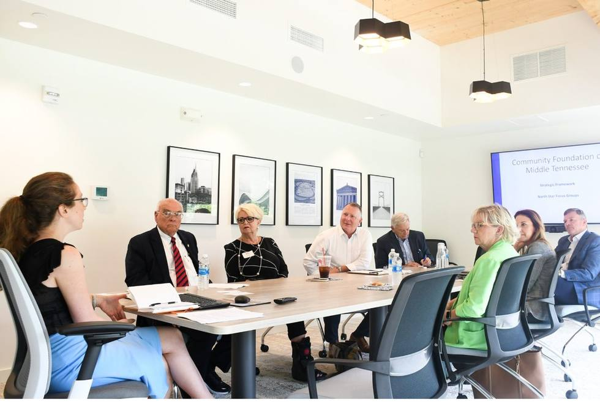
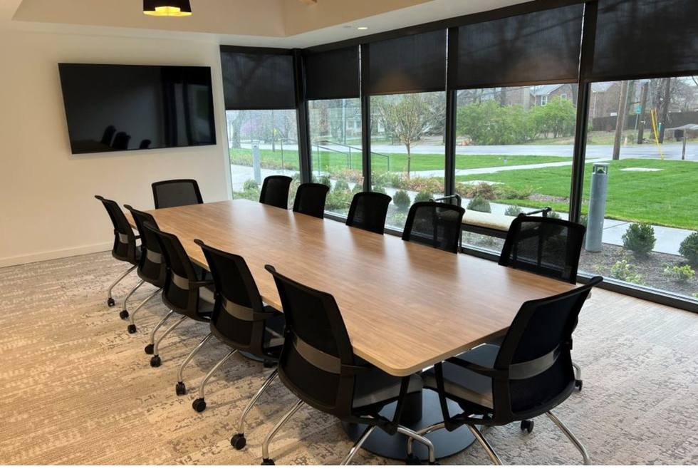

Laws of Ace Films · Community Foundation of Middle Tennessee
Donor Profile Films
Six fundholders, six reasons to give, and one clear answer to the question a prospective donor is quietly asking: is this for someone like me?
Subjects6 fundholders
Deliverables12 pieces
First shootSept 3, 2026
Final deliveryDec 15, 2026
The brief
These are not portraits. They are the reason someone opens a fund.
Gamechangers celebrated people who had already done the work. This series has a different job. It sits in a donor email, in a gift officer's presentation, and on the website, in front of someone who has resources and has never thought of themselves as a philanthropist.
So every film carries three things, in this order.
01 Motive
Why this person gives, told plainly enough that a viewer recognizes their own reason in it.
02 Mechanism
What opening a fund at CFMT actually made possible that would have been harder alone.
03 Invitation
A fundholder, not a foundation, saying the thing that gets someone off the fence.
What you receive
Twelve finished pieces, built as two matched sets.
Donor profile filmsTwo to three minutes. Full story, built for presentations and email.
6 ×
Social and website cutsThirty seconds. One strong quote, built as its own edit rather than a trim.
6 ×
Production daysThree-camera package, full lighting and audio, plus a pre-light and setup day.
2 shoots
PostColor, sound mix, titles and captions. One revision round per piece.
Included
Phase one
Three different doors into the same building.
The set only works if each fundholder answers who is this for differently. These three do.
Sept 3, 9:30
Harry and Chandra Allen
The Allen Family Beloved Community Fund
Giving built into family life, with three children involved from the start. For the donor thinking about what they pass on.
Sept 3, 11:00
Ernie Williams
Jane W. Williams Fund
Carrying a mother's generosity forward, and choosing CFMT on reputation alone. For the donor who has just been entrusted with something.
Sept 3, 2:00
Missy Eason
The Missy and Merideth Eason Fund
Decades with The Women's Fund and Girls Give, giving alongside women of every generation. For the donor who wants company, not just a transaction.
Approach
Clean, warm, and built to match across three months.
Look
Professional and buttoned up, deliberately not the Gamechangers treatment. One large soft key, controlled background, real separation. Quiet enough that the person is the only thing you notice.
Consistency
The two shoots are eight weeks apart in different daylight. Every setup is lit so the key dominates and the room never becomes the source, which is what lets a September film and a December film sit side by side and look like one series.
In the room
Three cameras on every subject, so each film has a full-frame conversation, a tight single, and reaction coverage without ever asking a donor to repeat themselves.
The room
We have already walked the Truist Conference Room.
One wall of glass, one wall of Nashville prints, and a conference table your fundholders will sit at. The table stays in the frame as a foreground plane, the prints become the background, and the glass becomes a controlled edge of light rather than a variable we are chasing all day.

The print wall. Neutral, on brand, and set perpendicular to the glass, which is what makes it controllable.

The window wall. Shades down, it becomes a soft panel behind the frame instead of a light source that changes by the hour.
The room is pre-lit and camera-ready the day before. When your first fundholder sits down at 9:30 on Thursday, nothing is still being built.
Schedule
Dates
Sept 2
Pre-light and setupTruist Conference Room, from 2:00 PM
Sept 3
Phase one shootAllens 9:30, Ernie Williams 11:00, Missy Eason 2:00
Oct 16
Phase one deliveryThree films and three social cuts
Late Oct
Phase two shootThree fundholders, date to be confirmed
Dec 15
Phase two deliveryThree films and three social cuts, project complete
Investment
Twelve thousand, split evenly across the two phases.
Phase one, production and post$6,000.00
Phase two, production and post$6,000.00
Project total$12,000.00
Fifty percent due on signing, which secures crew, equipment and the September 3 production date. Balance due on final delivery. Payment by check, W-9 on file. Invoices issue as LOA-2026-CFMT-03 and LOA-2026-CFMT-04 so neither collides in your system.